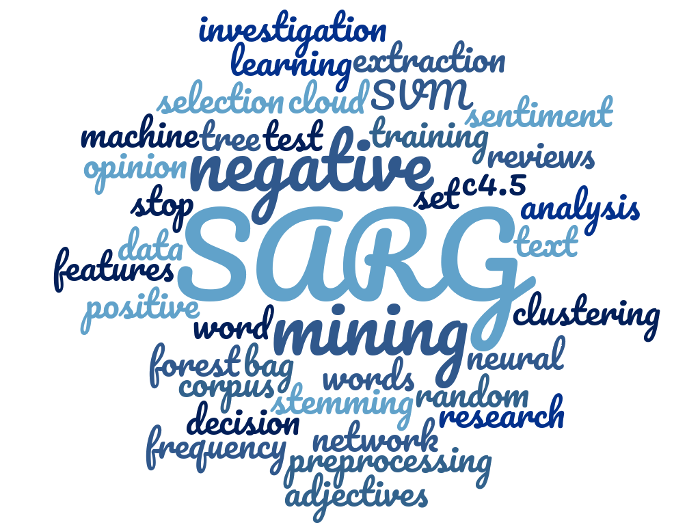

<div class="body_right">
              <!--PRINCIPAL-->
              <div class="cont_principal">
                  <div class="cont_left">
                      <div class="cont_text">

                          <h1>¿Quienes somos?</h1>
                          <p class="descripcion">SARG (Sentiment Analysis Research Group) es un grupo de investigación en el campo de la Ciencia de Datos enfocado a la extracción y análisis de los sentimientos procedentes de un texto.

                          El grupo está actualmente estudiando algoritmos de aprendizaje automático para buscar aquellos que den mejores resultados en la extracción de sentimientos a nivel de aspecto. Por otro lado, la extracción y selección de las características que permiten entrenar estos modelos son un tema de gran interés.

                          El grupo está compuesto por 7 integrantes, miembros del departamento de Ciencias de la Computación e Inteligencia Artificial de la Universidad de Granada.</p>

                          <h1>Análisis de Sentimientos</h1>
                          <p> El análisis de sentimientos es el procesamiento del lenguaje natural y análisis del texto que nos permite extraer información subjetiva procedente del texto fuente o corpus. Desde el punto de vista de la minería de datos, el análisis de sentimientos es una tarea de clasificación masiva de documentos de manera automática en función de la connotación postiva o negativa del lenguaje del documento. </p>

                          
                      </div>
                  </div>
                  <div class="cont_right">
                      
                  </div>
              </div>
          </div>
